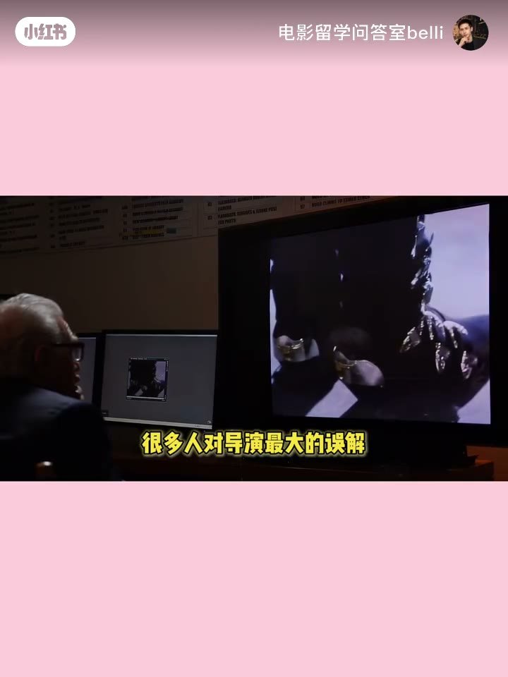
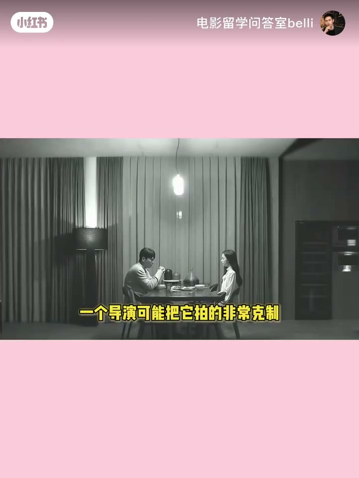
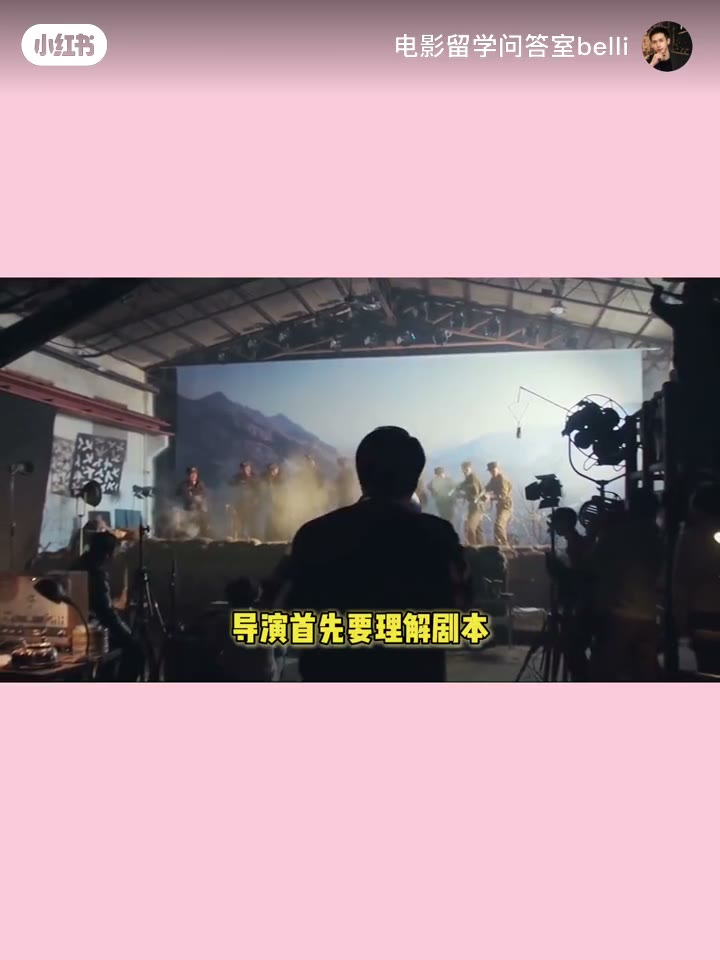
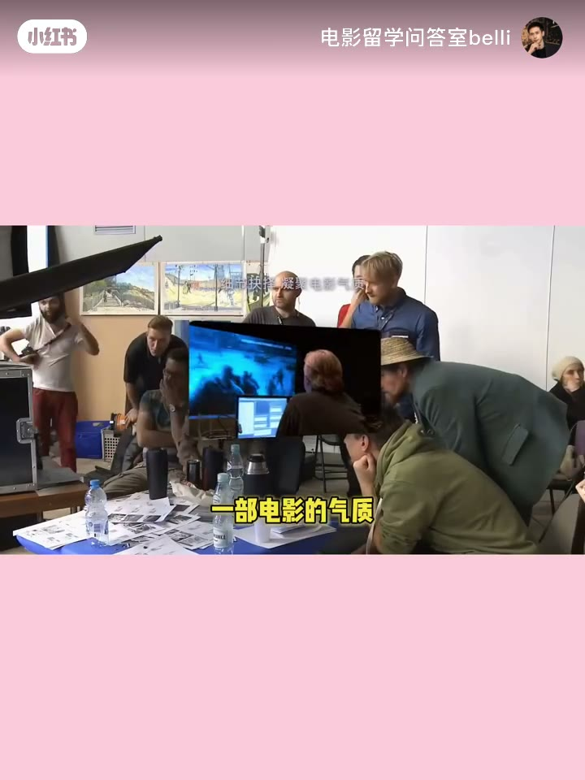
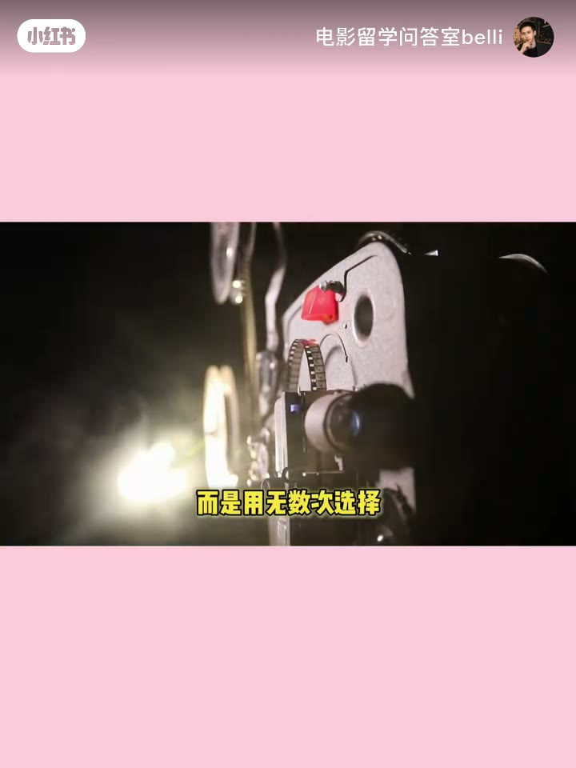

内容要点
大家好 我是阿布今天我们聊一聊为什么交给不同的导演最后可以变成完全不同的电影很多人对导演最大的误解就是觉得导演最重要的工作是拍甚至有人会把导演理解成演员站这里 摄影机放那里 然后开始但如果导演只是负责喊开始那么真正决定一部电影气质的东西到底
比如同样是一场告别一个导演可能把它拍得非常克制两个人坐在餐桌两端没有拥抱 没有眼泪甚至没有一句真正的告别另一个导演却可能让情绪彻底爆发台词 动作 音乐 空间 全部推向高潮故事没有变 人物也没有变但观众最后得到的情绪已经完全不同这就是导演的作
这些选择看起来很小但他们最终会共同决定一部电影的气质所以导演并不是一个执行剧本的人更准确地说 导演是在不断做驱舍什么该出现 什么应该隐藏什么应该让观众看见什么应该让观众自己意识到这其实也是我在海外电影学习中感受很深的一点老师往往不会简单问你
他会通过自己的选择让一部电影带上非常鲜明的个人表达所以你以后再看一部电影不要只问这个故事讲得好不好再往前走一步导演为什么偏偏这样讲为什么让人物沉默为什么让摄影机留在远处为什么这一刻没有音乐为什么最重要的事情反而没有直接拍出来当你开始追问这些
大家好 我是阿布今天我们聊一聊为什么交给不同的导演最后可以变成完全不同的电影很多人对导演最大的误解就是觉得导演最重要的工作是拍甚至有人会把导演理解成演员站这里 摄影机放那里 然后开始但如果导演只是负责喊开始那么真正决定一部电影气质的东西到底
00:00–00:43大家好 我是阿布今天我们聊一聊为什么交给不同的导…
大家好 我是阿布今天我们聊一聊为什么交给不同的导演最后可以变成完全不同的电影很多人对导演最大的误解就是觉得导演最重要的工作是拍甚至有人会把导演理解成演员站这里 摄影机放那里 然后开始但如果导演只是负责喊开始那么真正决定一部电影气质的东西到底是谁决定的其实 导演真正做的是一件更复杂的事情把剧本里的文字变成一个完整的电影世界这个过程在电影教育里经常会涉及一个非常重要的概念Directorial Vision 导演的创作视野它不是一句 我想拍得高级一点而是导演必须不断回答这个故事 我究竟想让观众怎样感受

00:43–01:27比如同样是一场告别一个导演可能把它拍得非常克制两…
比如同样是一场告别一个导演可能把它拍得非常克制两个人坐在餐桌两端没有拥抱 没有眼泪甚至没有一句真正的告别另一个导演却可能让情绪彻底爆发台词 动作 音乐 空间 全部推向高潮故事没有变 人物也没有变但观众最后得到的情绪已经完全不同这就是导演的作用导演首先要理解剧本但真正重要的是在理解之后做出一连串的创作判断演员应该压着眼 还是释放出来这一场戏应该让观众靠近人物还是故意保持一点距离摄影机应该跟着人物走还是安静地留在原地音乐什么时候进入甚至这一句台词到底要不要让演员说出来


01:27–02:11这些选择看起来很小但他们最终会共同决定一部电影的…
这些选择看起来很小但他们最终会共同决定一部电影的气质所以导演并不是一个执行剧本的人更准确地说 导演是在不断做驱舍什么该出现 什么应该隐藏什么应该让观众看见什么应该让观众自己意识到这其实也是我在海外电影学习中感受很深的一点老师往往不会简单问你你想怎么拍 而是会追问why 为什么一定要这样拍因为在真正的导演创作里选择本身就是表达这也是法国导演 电影理论家弗朗索瓦特里夫所代表的作者论传统里非常重要的一种导演观导演并不只是把一个故事搬上荧幕的人

02:11–02:55他会通过自己的选择让一部电影带上非常鲜明的个人表…
他会通过自己的选择让一部电影带上非常鲜明的个人表达所以你以后再看一部电影不要只问这个故事讲得好不好再往前走一步导演为什么偏偏这样讲为什么让人物沉默为什么让摄影机留在远处为什么这一刻没有音乐为什么最重要的事情反而没有直接拍出来当你开始追问这些问题你就不再只是一个观众你开始拥有导演的视角所以导演真正做的从来不是喊开始而是用无数次选择决定观众最后看到的电影下一集我们继续往下走同一个剧本为什么不同导演真的可以拍成完全不同的电影

完整转录（74段）
Whisper medium · 中文 · 已转简体，可能有识别误差。
大家好 我是阿布
今天我们聊一聊为什么交给不同的导演
最后可以变成完全不同的电影
很多人对导演最大的误解
就是觉得导演最重要的工作是拍
甚至有人会把导演理解成
演员站这里 摄影机放那里 然后开始
但如果导演只是负责喊开始
那么真正决定一部电影气质的东西
到底是谁决定的
其实 导演真正做的是一件更复杂的事情
把剧本里的文字变成一个完整的电影世界
这个过程在电影教育里
经常会涉及一个非常重要的概念
Directorial Vision 导演的创作视野
它不是一句 我想拍得高级一点
而是导演必须不断回答
这个故事 我究竟想让观众怎样感受
比如同样是一场告别
一个导演可能把它拍得非常克制
两个人坐在餐桌两端
没有拥抱 没有眼泪
甚至没有一句真正的告别
另一个导演却可能让情绪彻底爆发
台词 动作 音乐 空间 全部推向高潮
故事没有变 人物也没有变
但观众最后得到的情绪已经完全不同
这就是导演的作用
导演首先要理解剧本
但真正重要的是在理解之后
做出一连串的创作判断
演员应该压着眼 还是释放出来
这一场戏应该让观众靠近人物
还是故意保持一点距离
摄影机应该跟着人物走
还是安静地留在原地
音乐什么时候进入
甚至这一句台词到底要不要让演员说出来
这些选择看起来很小
但他们最终会共同决定一部电影的气质
所以导演并不是一个执行剧本的人
更准确地说 导演是在不断做驱舍
什么该出现 什么应该隐藏
什么应该让观众看见
什么应该让观众自己意识到
这其实也是我在海外电影学习中感受很深的一点
老师往往不会简单问你
你想怎么拍 而是会追问
why 为什么一定要这样拍
因为在真正的导演创作里
选择本身就是表达
这也是法国导演 电影理论家
弗朗索瓦特里夫所代表的作者论
传统里非常重要的一种导演观
导演并不只是把一个故事搬上荧幕的人
他会通过自己的选择
让一部电影带上非常鲜明的个人表达
所以你以后再看一部电影
不要只问这个故事讲得好不好
再往前走一步
导演为什么偏偏这样讲
为什么让人物沉默
为什么让摄影机留在远处
为什么这一刻没有音乐
为什么最重要的事情反而没有直接拍出来
当你开始追问这些问题
你就不再只是一个观众
你开始拥有导演的视角
所以导演真正做的从来不是喊开始
而是用无数次选择
决定观众最后看到的电影
下一集我们继续往下走
同一个剧本
为什么不同导演真的可以拍成完全不同的电影